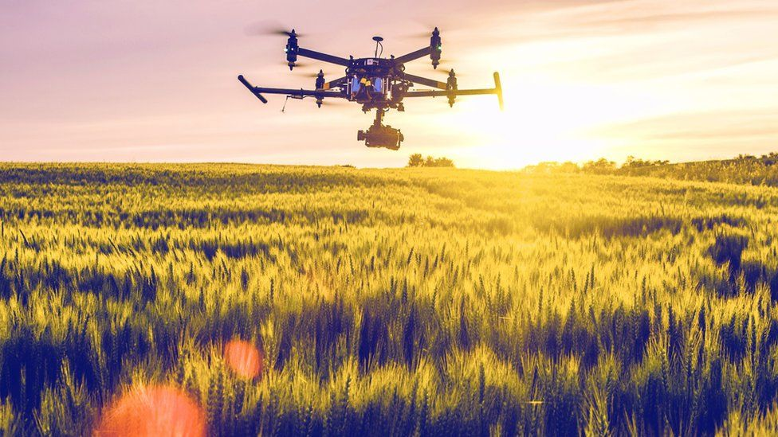

O Reino Unido está prestes a se tornar o lar da maior superrodovia automatizada de drones do mundo nos próximos dois anos. Os drones serão usados no projeto Skyway de 164 milhas que conecta cidades e cidades, incluindo Cambridge e Rugby. Faz parte de um pacote de financiamento de 273 milhões de libras para o setor aeroespacial que será revelado pelo secretário de Negócios Kwasi Kwarteng na segunda-feira. Outros projetos incluem drones entregando correspondência para as Ilhas de Scilly e medicamentos em toda a Escócia. Kwarteng deve anunciar as novidades no Farnborough International Airshow - o primeiro a ser realizado desde 2019. Ele dirá que o financiamento "ajudará o setor a aproveitar as enormes oportunidades de crescimento que existem à medida que o mundo passa para formas mais limpas de voo".
